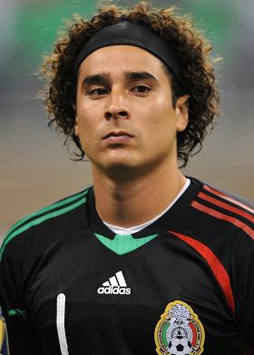
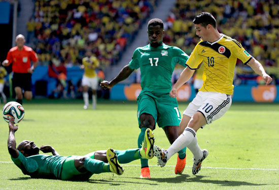
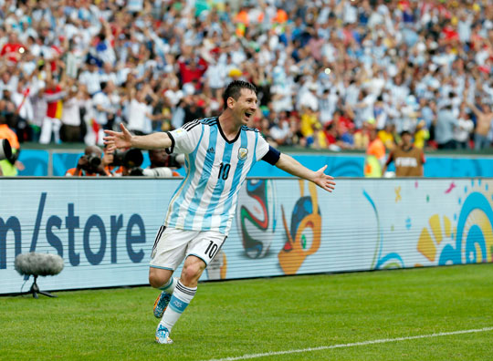

| Lista de equipos | Calendario y resultados | Tabla de grupos |
|---|---|---|
| Goleo individual | Goleo por equipos | Estadísticas |
| Noticias | ||
| Captura de resultados | ||
| Registrar equipo | ||
| Registrar jugador | ||
| Noticias | Resumen | |
|---|---|---|
| Memo Ochoa, el mejor portero del Mundial Brasil 2014 | El portero de la selección mexicana, Guillermo Ochoa, mantuvo su portería intacta de goles durante 267 minutos, mucho más tiempo que cualquier otro rival en la Copa del Mundo Brasil 2014. |  |
| Fecha y hora del partido Colombia vs. Uruguay, octavos de final Mundial de Brasil 2014 | El partido de Colombia vs. Uruguay se llevará a cabo este 28 de junio de 2014, en el Estadio Maracaná de Rio de Janeiro, a las 14:00 horas (de Centroamérica) como parte de la fase de octavos de final de la Copa del Mundo Brasil 2014. |  |
| Resultado del partido Nigeria vs. Argentina por el Mundial Brasil 2014 | Un coloso del área, un gladiador del gol. Otra vez Lionel Messi salió al rescate de Argentina con dos soberbios tantos que le dieron el triunfo en lo que fue la mejor actuación del equipo dentro de su marcha invicta por la primera fase de la Copa Mundial. |  |